Introduction to Spatial Raster Data Using the terra Package
Josh Carrell - Utah State University, MS Ecology
Last Update: May 13, 2022
Spatial Raster Data
Welcome to Raster data. This is the fun stuff.
If you remember from the week 4 lecture guide, spatial raster data consists of cells that are of equal width and length. These cells contain values which either numerical/continuous or discrete/categorical in nature.

.tif/.tiff files
We will be working with .tif or .tiff files for a majority of the class (possibly all of it). tif stands for Tagged image format whereas tiff stands for Tagged image file format. The two versions are synonymous.
Some other data types that function like .tif files are .img and .hdr files. For now, focus on the .tif.
Resolution
Resolution (in working with the raster data of this guide) refers to pixel size. This is technically called “Spatial Resolution”. The data in this guide has a spatial resolution of 30m and 1km.

terra
Straight from the R documentation on the terra package:
“terra provides methods to manipulate geographic (spatial) data in”raster” and “vector” form. Raster data divide space into rectangular cells (pixels) and they are commonly used to represent spatially continuous phenomena, such as elevation or the weather. Satellite images also have this data structure. In contrast, “vector” spatial data (points, lines, polygons) are typically used to represent discrete spatial entities, such as a road, country, or bus stop.”
Now, terra has the capability of being a one stop shop for using spatial data, both raster and vector. If you remember them from the week 4 lecture, we cover this briefly. Let’s look at SpatRasters and SpatVectors quickly once again.
SpatVector
SpatVectors function the same way that vector data does. It is simply a different data type than your sf vectors and sometimes, it required for analysis using the terra package.
SpatRaster
“SpatRaster supports handling large raster files that cannot be loaded into memory; local, focal, zonal, and global raster operations; polygon, line and point to raster conversion; integration with modeling methods to make spatial predictions; and more” - R Documentation on terra package
Data
For this coding guide, we will be working with raster and vector data provided by the National Park Service, specifically Zion National Park. You can get spatial data of national parks, forests, and monuments from Data.gov. The boundaries of every National Park/Monument/Area under the specific agency jurisdiction is provided in the data folder called, “nps_boundary.shp”.

nps <- sf::st_read("D:/R Textbook Template/NR6950 Notebook/NR 6950 Notebook/Data/nps_boundary.shp")## Reading layer `nps_boundary' from data source
## `D:\R Textbook Template\NR6950 Notebook\NR 6950 Notebook\Data\nps_boundary.shp'
## using driver `ESRI Shapefile'
## Simple feature collection with 427 features and 15 fields
## Geometry type: MULTIPOLYGON
## Dimension: XY
## Bounding box: xmin: -170.7276 ymin: -14.28316 xmax: 145.7318 ymax: 68.65539
## Geodetic CRS: NAD83plot(nps$geometry, main = "A lot of polygons!")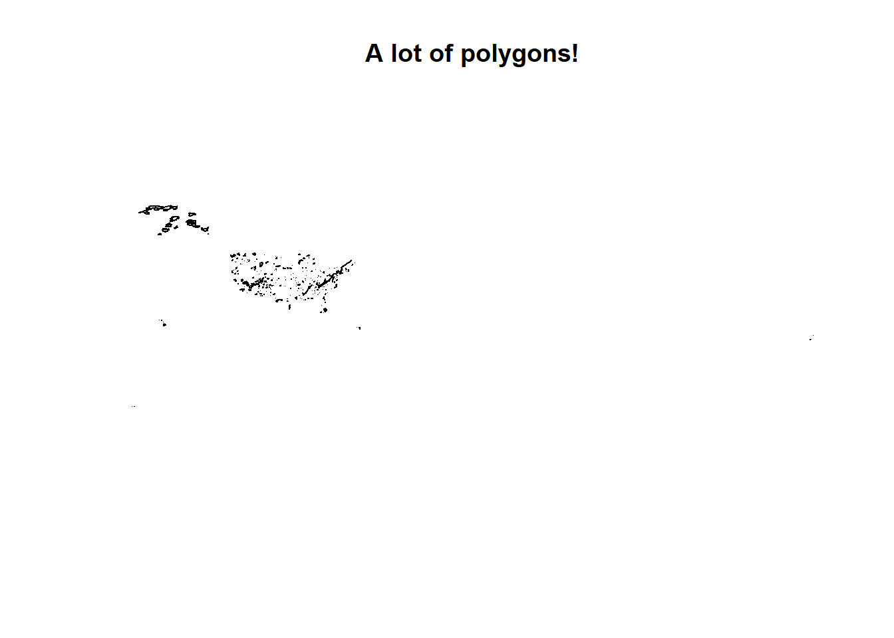
Objectives
We’ll be walking through the basics of raster data analysis using the terra package. By the end of this guide, you will have a firm grasp on how to load, manipulate, analyze, and visualize raster data.
Libraries
Load the following libraries as you follow along:
terra
sf
tidyverse
Projections
If you remember from week 4, coordinate system data can be obtained from using EPSG codes. This week we will be using the proj4string data. Simply put, it is another way to project data. We’ll be projecting our data to NAD 83 Albers Equal Area by using it’s proj4string information. Check out the proj 4 string information in the code and copy it to your own R script.
prj.aeaN83 <- "+proj=aea +lat_1=29.5 +lat_2=45.5 +lat_0=23 +lon_0=-96 +x_0=0 +y_0=0 +ellps=GRS80 +towgs84=0,0,0,0,0,0,0 +units=m +no_defs" terra functions
Just like the spatial vector coding guide, we will be walking through several functions that are important to learn in working with spatial vector data.
rast()
The rast() function stands for raster. It is the method for loading raster data in R. Syntax is as follows:
variable <- rast(“pathway/raster.tif”)
Let’s load in our 1 digital elevation models, using rast(). Load “zion_B”.
NOTE: A Digital Elevation Model (DEM) is a raster data set that contains elevation information in each pixel. It is one of the most common raster data types you will encounter.
zionB <- terra::rast("D:/R Textbook Template/NR6950 Notebook/NR 6950 Notebook/Data/Rasters/zion_B.tif") # Load demsummary()
summary() provides a quick summary of the data by providing the basic descriptive statistics of the dataset. Since we are working with elevation in meters, we should see values in the 1000’s for Zion National Park.
terra::summary(zionB)## Warning: [summary] used a sample## zion_B
## Min. :1171
## 1st Qu.:1835
## Median :2109
## Mean :2153
## 3rd Qu.:2421
## Max. :3387freq()
freq() stands for frequency. This data can get overwhelming as it is equivalent the function, table(). It will return the count of cells that contain a given value. That’s alot of information. So lets just run a head() on it to get the idea.
head(terra::freq(zionB),5)## layer value count
## [1,] 1 1158 2
## [2,] 1 1159 2
## [3,] 1 1160 7
## [4,] 1 1161 15
## [5,] 1 1162 12hist()
A histogram would provide the same information as freq(), just in a visual and less overwhelming manner.
terra::hist(zionB)## Warning: [hist] a sample of8% of the cells was used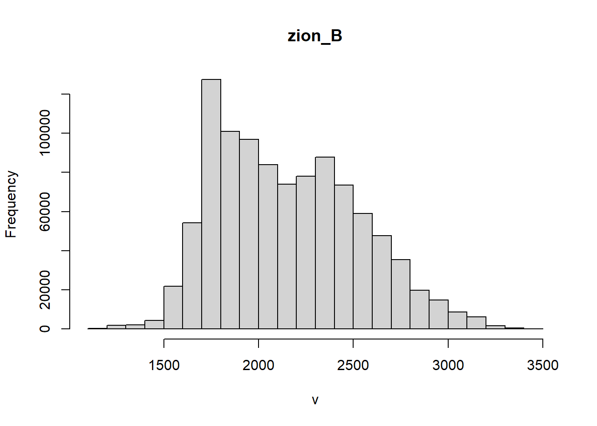
plot()
By now, you’re very familiar with the plot() function. However, when working with SpatRasters, you need to be sure you are using the plot() function from the terra package. plot() from the base R package will not work on SpatRasters. One easy way to make sure you are using the right function is to call the package by using 2 :, like so:
terra::plot(raster)
I often call a package before using a specific function to be sure I am doing the right thing!
terra::plot(zionB)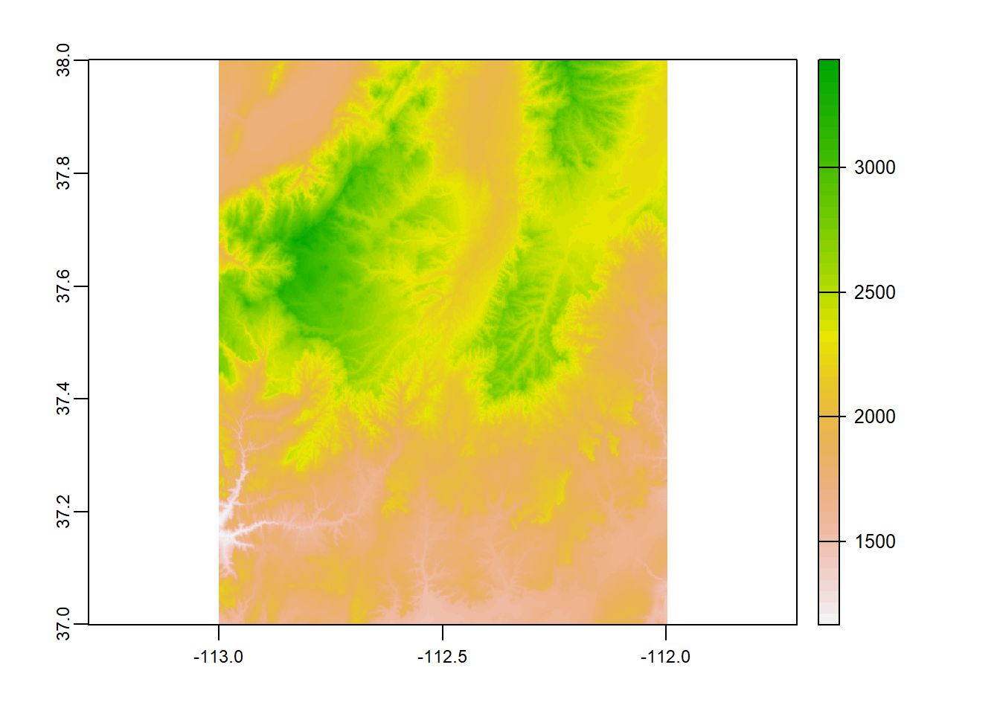
project()
project() is the equivalent of st_transform(), but for raster data. Check out the code:
zionB <- terra::project(zionB, prj.aeaN83)
terra::plot(zionB)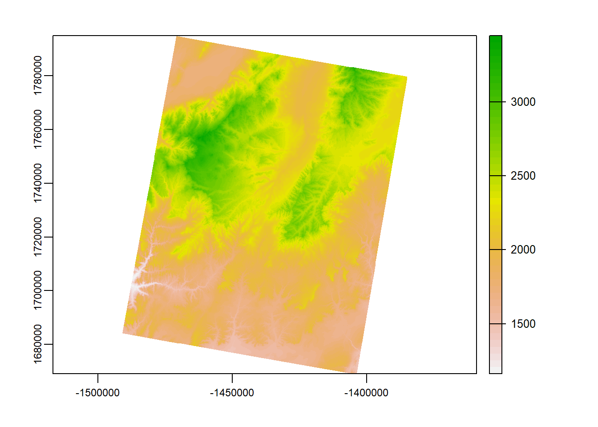
mosaic()
mosaic() is very similar to merging vector data, only with rasters. 2 or more overlapping/touching raster data can be combined into a single raster which is extremely useful.
To get the idea, let’s look at our loaded raster data and the boundary of Zion National Park (we’ll need to subset that data from our larger dataset using the PARKNAME column and then transform it to match our Zion raster data).
zion_bounds <- nps %>%
filter(PARKNAME == "Zion") # subset to only Zion NP
zion_bounds <- st_transform(zion_bounds, prj.aeaN83) # change the crs
plot(zionB) # plot
plot(zion_bounds$geometry, add = T) # add boundary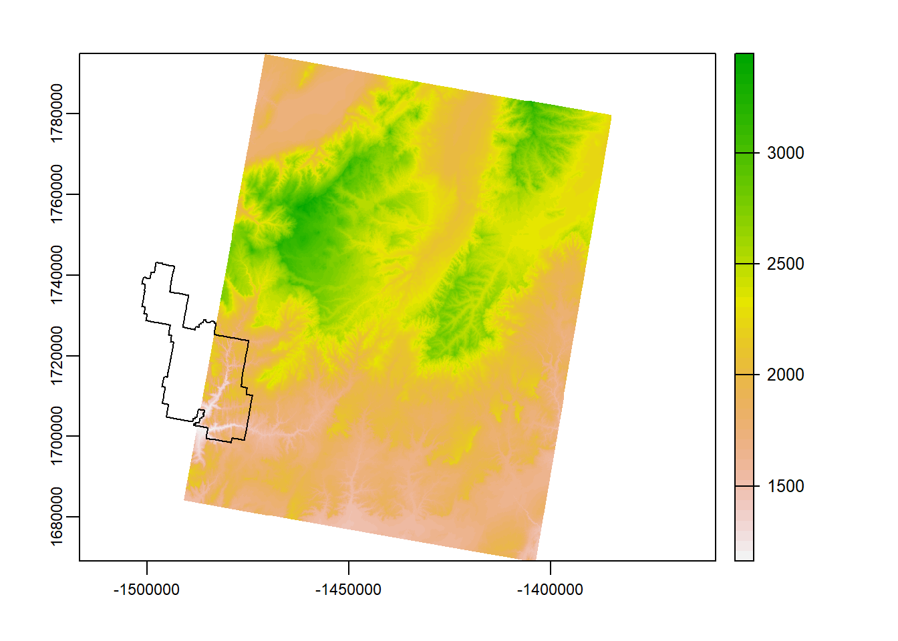
So looking at the plot above, we are lucky enough that our raster data only covers about half of Zion… Luckily, we have the other half! Let’s load zion_A.
zionA <- terra::rast("D:/R Textbook Template/NR6950 Notebook/NR 6950 Notebook/Data/Rasters/zion_A.tif")
zionA <- terra::project(zionA, prj.aeaN83)
terra::plot(zionA, main = "They both cover Zion!")
plot(zion_bounds$geometry, add = T)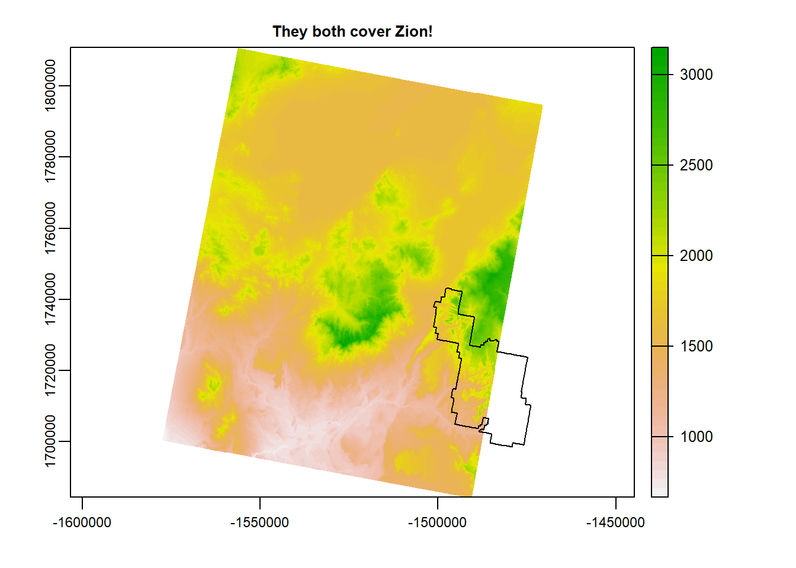
terra::plot(zionB, main = "But we need them to be one...")
plot(zion_bounds$geometry, add = T)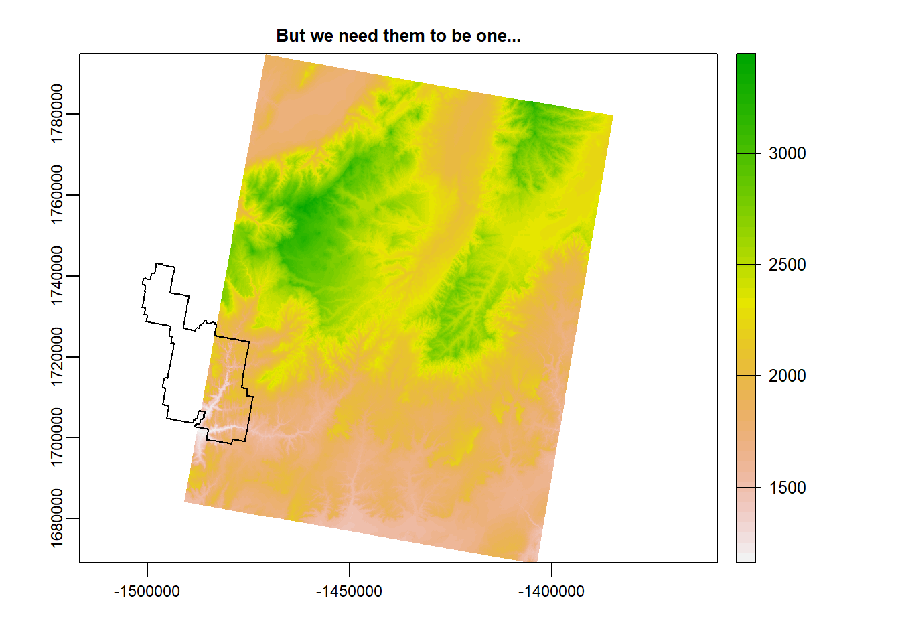
This is where mosaic() comes in. Check out the code and the output.
mosaic_r <- mosaic(zionA, zionB)## Warning: [mosaic] rasters did not align and were resampledterra::plot(mosaic_r)
plot(zion_bounds$geometry, add = T)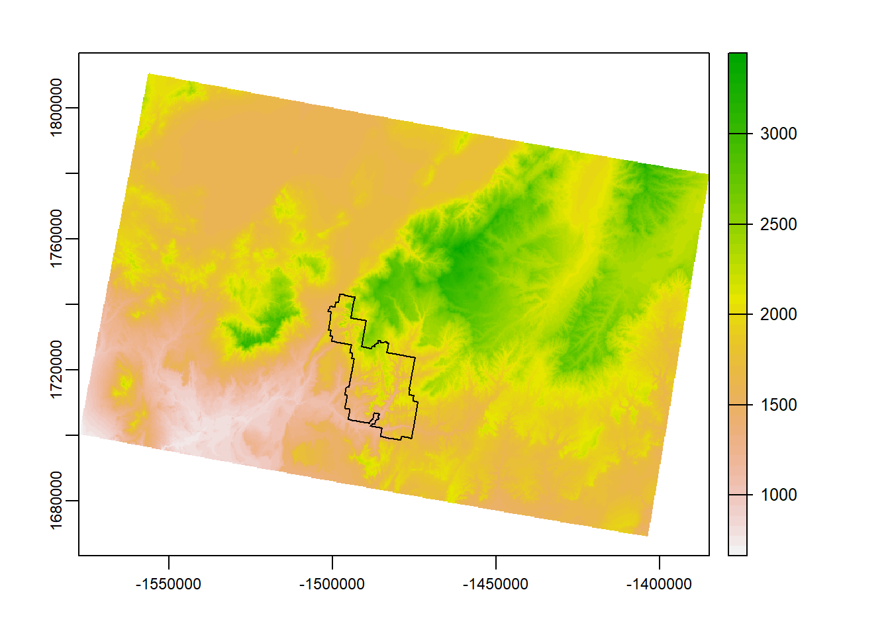
crop() vs. mask()
Great. Our rasters are now 1 and they cover our park completely. We’re going to be running analyses on raster data in Zion so we don’t need all that excess data outside of the park boundary.
Both crop() and mask() perform this action, only slightly different. Let’s take a look at what they do:
NOTE: We are cropping/masking (essentially just trimming down the size of raster) a raster by a vector data. Currently, our Zion boundary was loaded through the package sf and is an sf object. For these funcitons to work, the sf objects must become SpatVectors. We can change the data by using the as() function. Check the code to see how it works.
zion_bounds_v <- as(zion_bounds, "SpatVector") # change to SpatVector
Zion <- terra::crop(mosaic_r, zion_bounds_v) # crop
terra::plot(Zion, main = "This is the crop() output!")
plot(zion_bounds$geometry, add = T)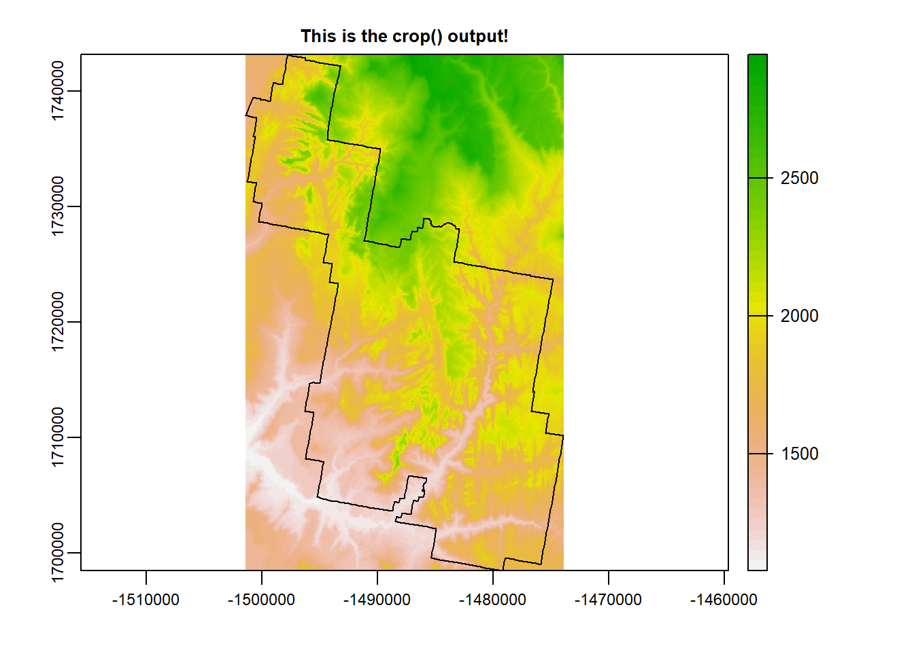
Zion_m <- terra::mask(Zion, zion_bounds_v) # mask to a defined polygon boundary
terra::plot(Zion_m, main = "This is the mask() output!")
plot(zion_bounds$geometry, add = T)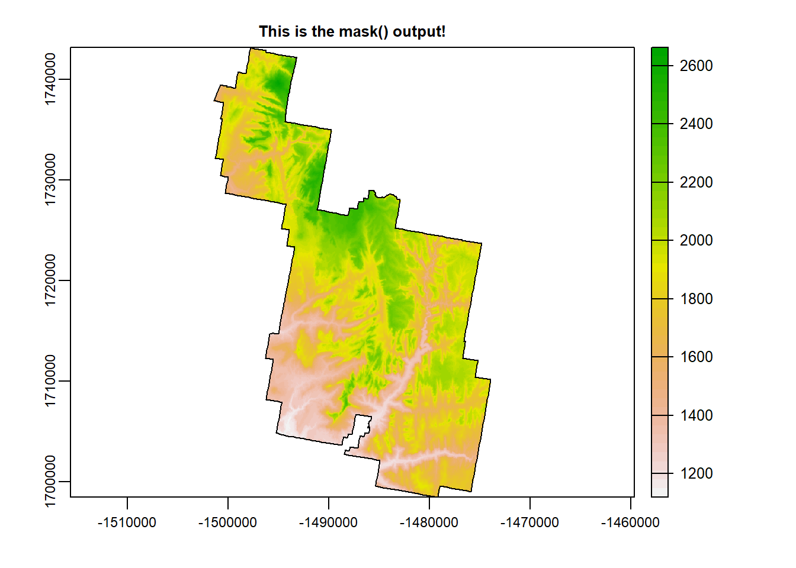
From here on forward, we will be working with masked version.
terrain()
terrain() allows you to compute terrain characteristics from a DEM. These characteristics are useful to have when examining a landscape. You will specify which characteristic you want to calculate in quotation marks.
Slope
Slope measures the… well, slope. Slope is the the angle of a slopeing hill/cliff face and is provided in units between 0-90 degrees. 90 degrees being a straight up cliff while 0 degrees is flat ground.
If you have been to Zion National Park (if you haven’t, you must go) you are familiar with the Sandstone cliffs. So in your mind, how would slope look? Probably alot of values between 80-90 degrees! There are a lot of cliffs in Zion.
slp <- terra::terrain(Zion_m, "slope")
terra::plot(slp)
plot(zion_bounds$geometry, add = T)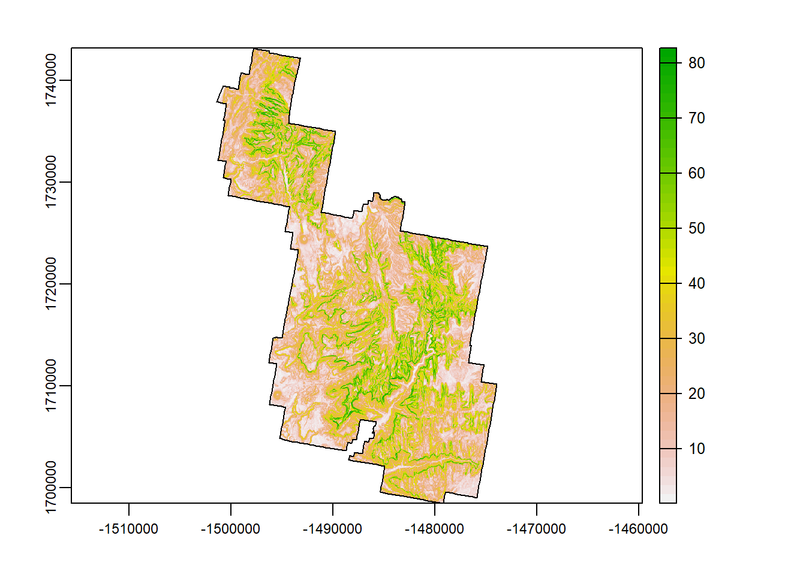
Aspect
Aspect refers to the direction the slope face is facing. The output is measured in 360 degrees with North being values 0/360, east being 90, south being 180, and west being 270.
asp <- terra::terrain(Zion_m, "aspect")
terra::plot(asp)
plot(zion_bounds$geometry, add = T)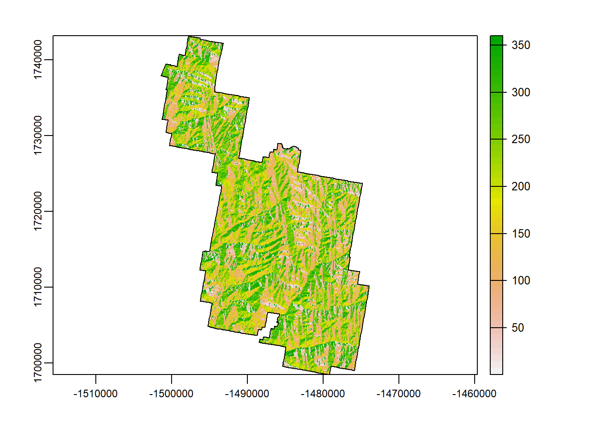
TPI
Topographic position index (TPI) is an algorithm increasingly used to measure topographic slope positions and to automate landform classifications. If you look close (and you will need to look close…), you can see the general landscape of Zion being broken up into sub-landscape types.
tpi <- terra::terrain(Zion_m, "TPI")
terra::plot(tpi)
plot(zion_bounds$geometry, add = T)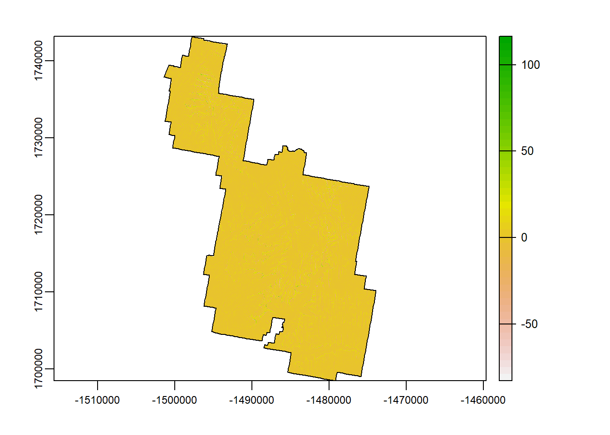
TRI
The topographic ruggedness index (TRI) was developed by Riley et al. (1999) to express the amount of elevation difference between adjacent cells of a DEM. It calculates the difference in elevation values from a center cell and the eight cells immediately surrounding it. Basically, higher values indicate a greater change in elevation between cells.
tri <- terra::terrain(Zion_m, "TRI")
terra::plot(tri)
plot(zion_bounds$geometry, add = T)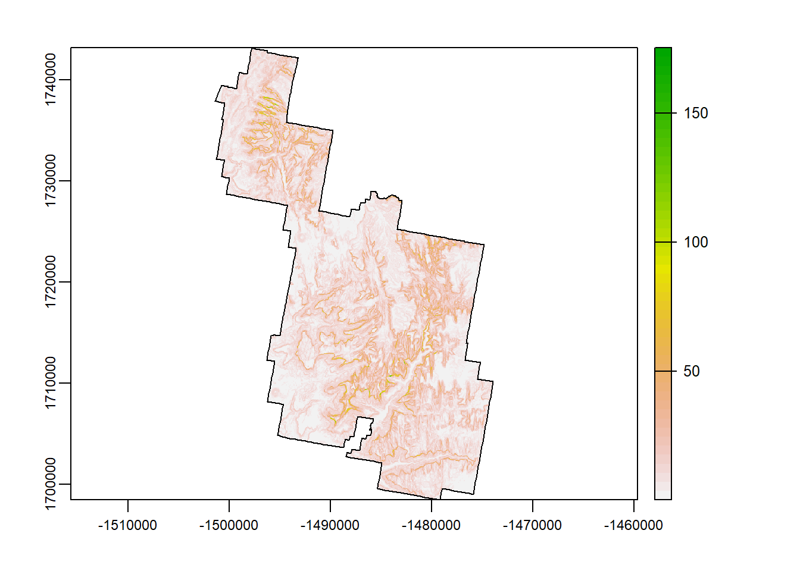
roughness
Roughness is the degree of irregularity of the surface. It’s calculated by the largest inter-cell difference of a central pixel and its sourrounding cell. Do you see any differences between roughness and TRI? Hardly.
Rougher terrains are an important indicator of habitat resources of certain wildlife species. For example, Mtn Lions like rough terrain.
rough <- terra::terrain(Zion_m, "roughness")
terra::plot(rough)
plot(zion_bounds$geometry, add = T)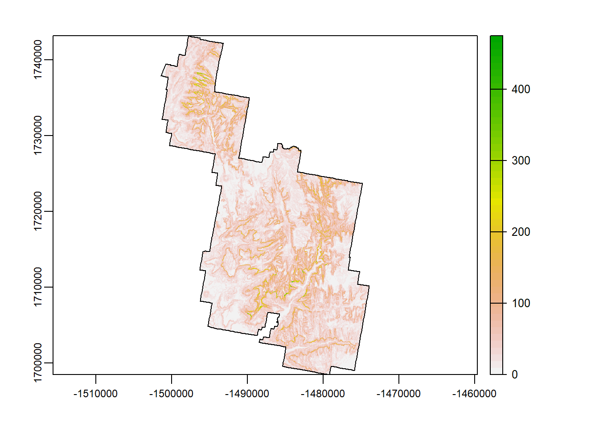
c()
Great. We’ve started with a DEM and calculate 5 extra terrain characteristics. Pretty cool, huh?
Now we could plot them all separately and save them all as individual rasters. However, raster data has the unique option of being “stacked”. If 2 or more raster data have the same extent, crs, and resolution, they can be stacked on top of each other and act as a single .tif file of multiple layers.
It’s pretty simple to do. Just using the c() function and assign a variable all of the raster data you want.
rasterz <- c(Zion_m, slp, asp, tpi, tri, rough)
rasterz## class : SpatRaster
## dimensions : 1601, 985, 6 (nrow, ncol, nlyr)
## resolution : 27.9354, 27.9354 (x, y)
## extent : -1501419, -1473902, 1698450, 1743175 (xmin, xmax, ymin, ymax)
## coord. ref. : +proj=aea +lat_0=23 +lon_0=-96 +lat_1=29.5 +lat_2=45.5 +x_0=0 +y_0=0 +ellps=GRS80 +towgs84=0,0,0,0,0,0,0 +units=m +no_defs
## sources : memory
## memory
## memory
## ... and 3 more source(s)
## names : zion_A, slope, aspect, TPI, TRI, roughness
## min values : 1.118037e+03, 1.451942e-02, 5.216110e-13, -1.073425e+02, 5.718994e-02, 0.000000e+00
## max values : 2662.07104, 82.77046, 359.99973, 116.36192, 179.66139, 497.51733dim(rasterz)## [1] 1601 985 6terra::plot(rasterz)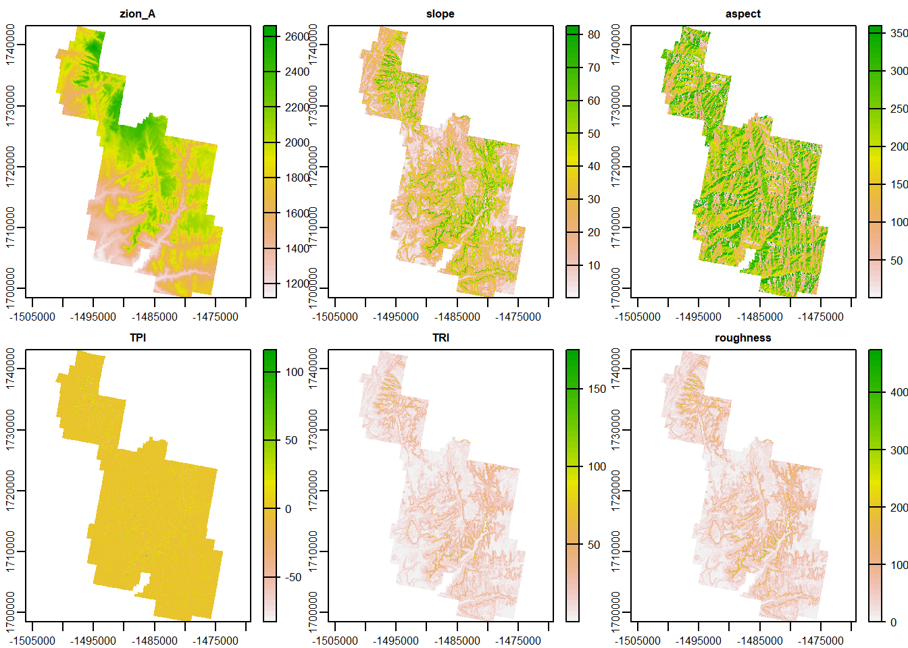
contour()
If you have ever taken a physical geology/geography course, or ever looked a map, chances are you have come across contour lines. Contours are lines that continually cross a single unit of elevation.
If contour lines are close together on a map, count on steep terrain. If they are widespread, the terrain should be gently slopes.
contour() allows you to create contour lines on a DEM. Check out the code to create contours!
terra::plot(Zion_m)
terra::contour(Zion_m, add = T)
plot(zion_bounds$geometry, add = T)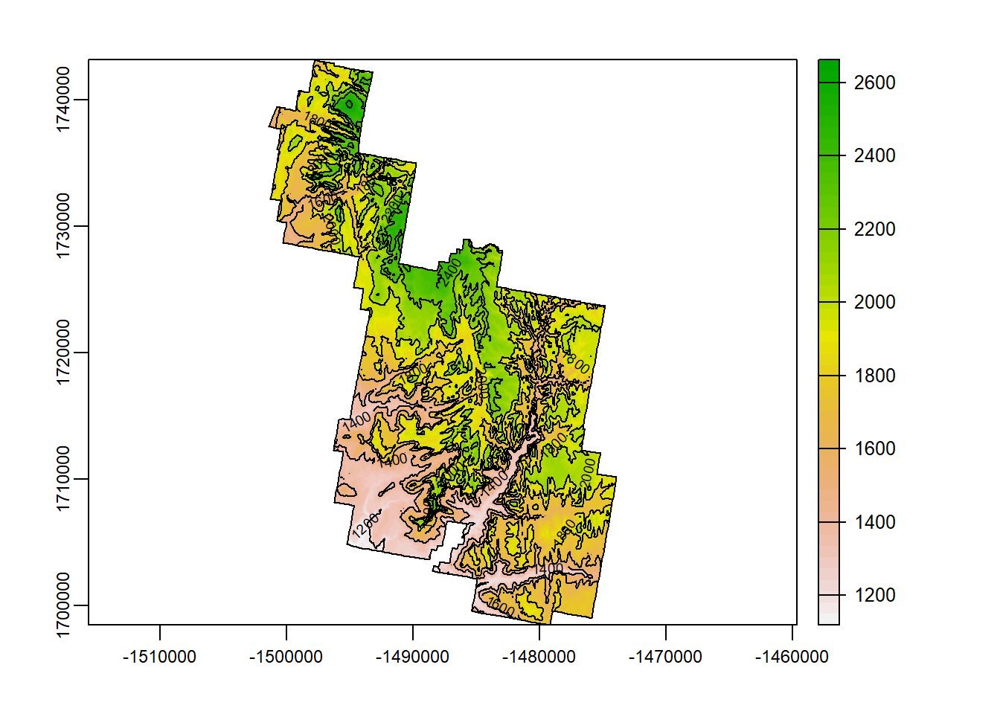
Don’t like the distance between lines? You can change this by including the specified number of contours you would like. use “nlevels =”. Let’s make 5 contours.
terra::plot(Zion_m, main = "5 Contours")
terra::contour(Zion_m, add = T, nlevels = 5)
plot(zion_bounds$geometry, add = T)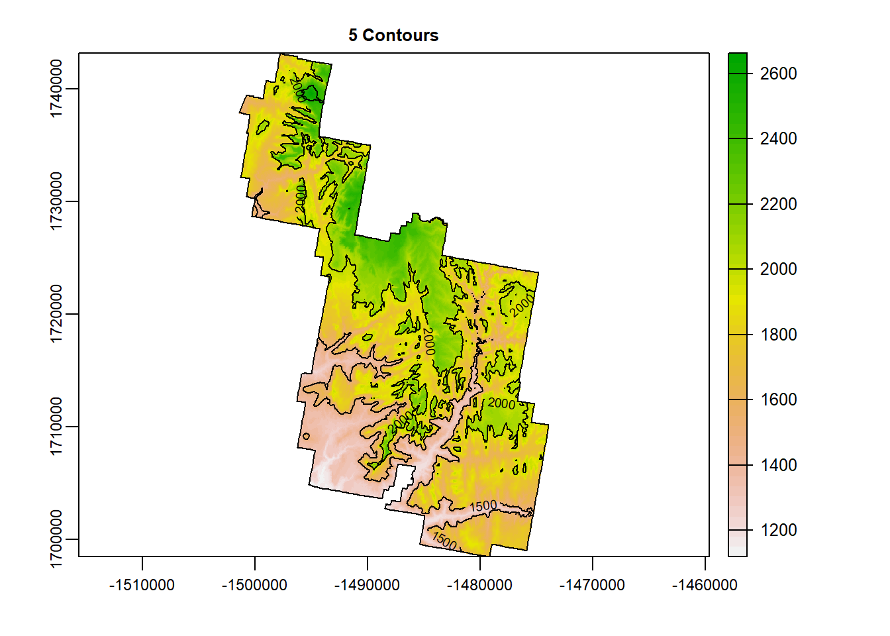
classify()
classify() allows you to reclassify the values of a given raster. For example, our DEM has values from ~1100 to ~2650. Any value between those 2, could occupy and given cell within that raster.
Reclassifying a raster would allow us to say, “Any value between 1000-1500m in elevation will now have the same pixel value”. We are really just breaking down all the potential values into categories.
Take a look at the code and the output below:
Zion_m## class : SpatRaster
## dimensions : 1601, 985, 1 (nrow, ncol, nlyr)
## resolution : 27.9354, 27.9354 (x, y)
## extent : -1501419, -1473902, 1698450, 1743175 (xmin, xmax, ymin, ymax)
## coord. ref. : +proj=aea +lat_0=23 +lon_0=-96 +lat_1=29.5 +lat_2=45.5 +x_0=0 +y_0=0 +ellps=GRS80 +towgs84=0,0,0,0,0,0,0 +units=m +no_defs
## source : memory
## name : zion_A
## min value : 1118.037
## max value : 2662.071classifyz <- terra::classify(Zion_m,
c(1000,
1500,
2000,
2500,
3000))
terra::plot(classifyz)
plot(zion_bounds$geometry, add = T)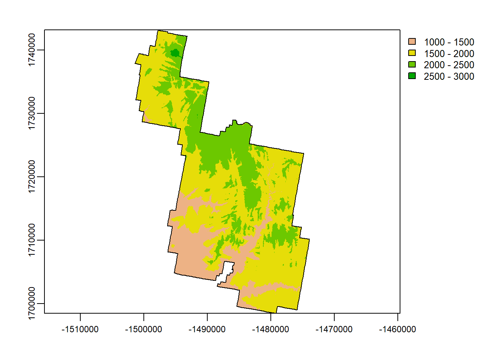
extract()
extract() does exactly what it sounds like. It extracts. A very common practice in spatial modeling (species distribution modeling in particular!) requires a dataset of points that contain the value of the many raster data it overlaps with.
For example, load into your script the “overlook.shp”. These are designated scenic overlooks in Zion.
overlook <- sf::st_read("D:/R Textbook Template/NR6950 Notebook/NR 6950 Notebook/Data/Rasters/overlook.shp") # Load## Reading layer `Overlook' from data source
## `D:\R Textbook Template\NR6950 Notebook\NR 6950 Notebook\Data\Rasters\Overlook.shp'
## using driver `ESRI Shapefile'
## Simple feature collection with 15 features and 30 fields
## Geometry type: POINT
## Dimension: XY
## Bounding box: xmin: 305178.6 ymin: 4115900 xmax: 333338.2 ymax: 4148434
## Projected CRS: NAD83 / UTM zone 12Noverlook <- st_transform(overlook, prj.aeaN83) # Transform to match
terra::plot(Zion_m, main = "Scenic Overlook Points on Zion DEM") # plot dem
plot(zion_bounds$geometry, add = T) # Zion boundary
plot(overlook$geometry, add = T, pch = 18) # add points, pch = symbol shape.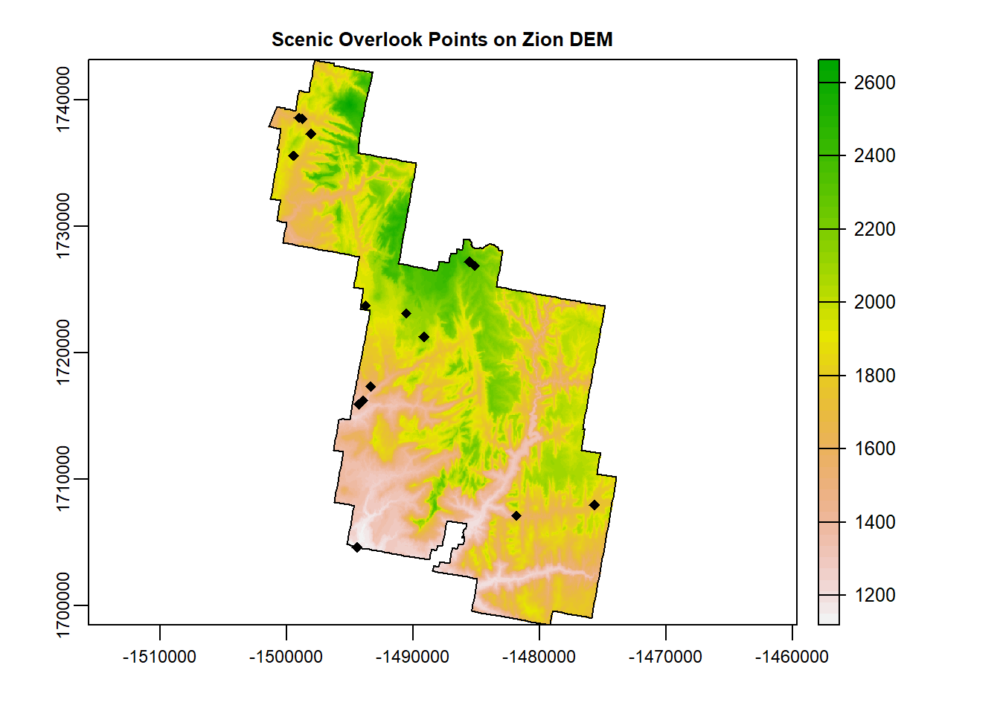
Now our overlook points do not have information regarding our DEM values. BUT, in space, they are synonymous with an associated elevation.
extract() can take point data, and extract those associated values of a raster (or polygon!). Lets give it a test run and see the output for extracting values from our DEM to our points.
overlook_v <- as(overlook, "SpatVector") # must be spatvector when working with spatraster
overlook_ex <- terra::extract(Zion, overlook_v) #raster first, point data second
pander::pander(head(overlook_ex)) # pander table| ID | zion_A |
|---|---|
| 1 | 1864 |
| 2 | 1677 |
| 3 | 1900 |
| 4 | 1652 |
| 5 | 2382 |
| 6 | 2278 |
The output table above is ID: the id of the point data, and zion_A: The elevation value in the cell of the overlapping point. So now, we have elevations of each scenic overlook!
This can also work with raster stacks! Let’s extract the values of our stacked rasters.
overlook_v <- as(overlook, "SpatVector") # must be spatvector when working with spatraster
overlook_ex <- terra::extract(rasterz, overlook_v) #raster first, point data second
pander::pander(head(overlook_ex)) # pander table| ID | zion_A | slope | aspect | TPI | TRI | roughness |
|---|---|---|---|---|---|---|
| 1 | 1864 | 26.5 | 357.7 | -0.2674 | 10.32 | 29.32 |
| 2 | 1677 | 7.011 | 3.884 | 0.3437 | 2.979 | 8.588 |
| 3 | 1900 | 3.426 | 124.4 | 1.52 | 1.916 | 6.234 |
| 4 | 1652 | 19.75 | 3.412 | -2.028 | 7.712 | 21.8 |
| 5 | 2382 | 30 | 77.48 | 4.235 | 13.44 | 44.77 |
| 6 | 2278 | 4.216 | 152.7 | 0.9659 | 1.679 | 6.302 |
rasterize()
You might be saying, “This is all great! But what if you have polygons of some data that you can’t find as a raster?”. Well if that’s you, then look no further!
rasterize() allows you to rasterize polygons. It requires you to have: 1) a polygon to rasterize; 2) a raster dataset.
The polygon will then be rasterized and will match the same CRS and resolution as the provided raster.
In the data folder, I have provided a shapefile called “soil.shp”. Load it in your script and let’s look at it.
soils <- sf::st_read("D:/R Textbook Template/NR6950 Notebook/NR 6950 Notebook/Data/Rasters/soil.shp")## Reading layer `soil' from data source
## `D:\R Textbook Template\NR6950 Notebook\NR 6950 Notebook\Data\Rasters\soil.shp'
## using driver `ESRI Shapefile'
## Simple feature collection with 13 features and 59 fields
## Geometry type: MULTIPOLYGON
## Dimension: XY
## Bounding box: xmin: -1501414 ymin: 1698460 xmax: -1473913 ymax: 1743165
## CRS: unknownplot(soils$geometry)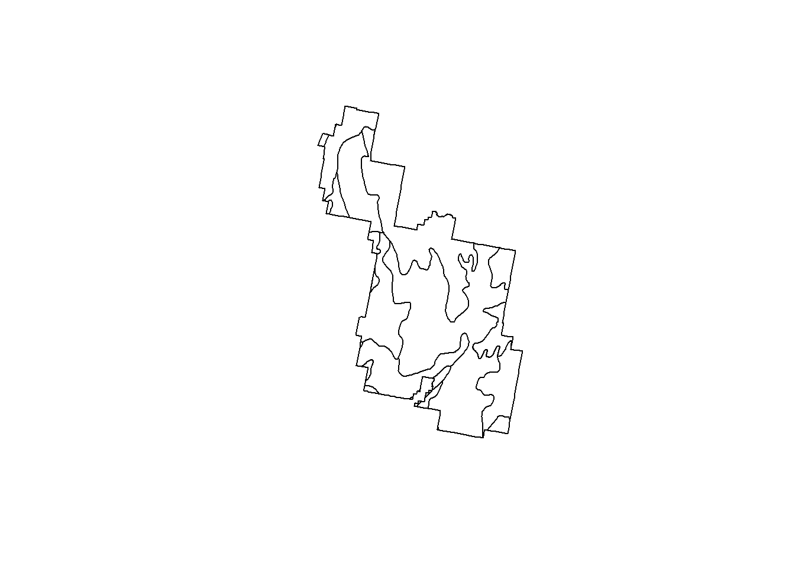
head(soils, 2)## Simple feature collection with 2 features and 59 fields
## Geometry type: MULTIPOLYGON
## Dimension: XY
## Bounding box: xmin: -1501414 ymin: 1709128 xmax: -1474838 ymax: 1743165
## CRS: unknown
## mukey taxorder taxsuborde taxgrtgrou taxsubgrp subord grtgrp
## 1 658437 Entisols Fluvents Ustifluvents Aridic Ustifluvents Flu Ust
## 2 674742 Mollisols Ustolls Haplustolls Lithic Haplustolls Ust Hap
## c_order c_sbord c_ggrp phmin phave phmax frag3to10 sieveno4 sieveno10
## 1 104 110 137 660 792 900 1 92 89
## 2 107 125 120 560 744 840 9 85 82
## sieveno40 sieveno200 sand silt clay omr dryweight ksat awc wsat minalogy
## 1 77 51 46 34 20 93 175 282 18 39 mixed
## 2 72 54 43 31 26 375 169 917 6 0 mixed
## reaction ph_ave frag_3to10 sieve_4 sieve_10 sieve_40 sieve_200 sand_txt
## 1 calcareous 792 1 92 89 77 51 46
## 2 <NA> 744 9 85 82 72 54 43
## silt_txt clay_txt orgmat dwieght ksat_txt awc_txt wsat_txt minerals
## 1 34 20 93 175 282 18 39 mixed
## 2 31 26 375 169 917 6 na mixed
## calcereous UNIT_CODE
## 1 calcareous ZION
## 2 <NA> ZION
## GIS_Notes
## 1 Lands - http://landsnet.nps.gov/tractsnet/documents/ZION/Metadata/zion_metadata.xml
## 2 Lands - http://landsnet.nps.gov/tractsnet/documents/ZION/Metadata/zion_metadata.xml
## UNIT_NAME DATE_EDIT STATE REGION GNIS_ID UNIT_TYPE CREATED_BY
## 1 Zion National Park 2017-06-22 UT IM 1455157 National Park Lands
## 2 Zion National Park 2017-06-22 UT IM 1455157 National Park Lands
## METADATA PARKNAME Shape_Leng
## 1 https://irma.nps.gov/DataStore/Reference/Profile/2181118 Zion 1.638446
## 2 https://irma.nps.gov/DataStore/Reference/Profile/2181118 Zion 1.638446
## Shape_Area Unified_Re Old_Region geometry
## 1 0.06115851 7 IM MULTIPOLYGON (((-1497787 17...
## 2 0.06115851 7 IM MULTIPOLYGON (((-1475591 17...So this data is already trimmed to the Zion NP boundary and contains a lot of fields! As you recall, a shapefile can contain 1 geometry but multiple characteristics.
Let’s rasterize this thing. The syntax is as follows:
variable <- rasterize(polygon, raster, field = “Which column do you want to rasterize?”)
Let’s rasterize phmin (minimum ph level in the soil):
soils_v <- as(soils, "SpatVector") # Must be spatvector
phave <- terra::rasterize(soils_v, Zion_m, field = "phmin")
plot(phave)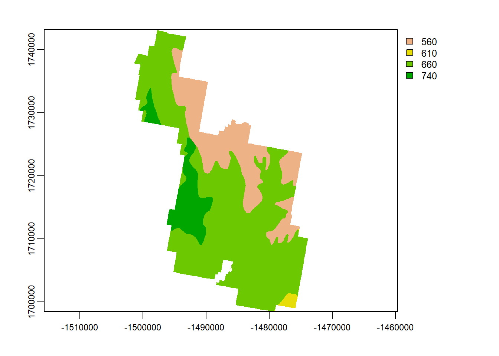
Raster Math
Rasters of equal extent, resolution, and crs can use mathematical functions to generate new rasters of the same spatial characteristics.
I’ve provided some rasters of current annual mean temperature and the projected future annual mean temperature for 2100.
Since they are the same CRS, resolution, and extent, I can use mathematical operators to work with my data. Let’s first look at the rasters.
clim <- terra::rast("D:/R Textbook Template/NR6950 Notebook/NR 6950 Notebook/Data/Rasters/amt.tif")
terra::plot(clim)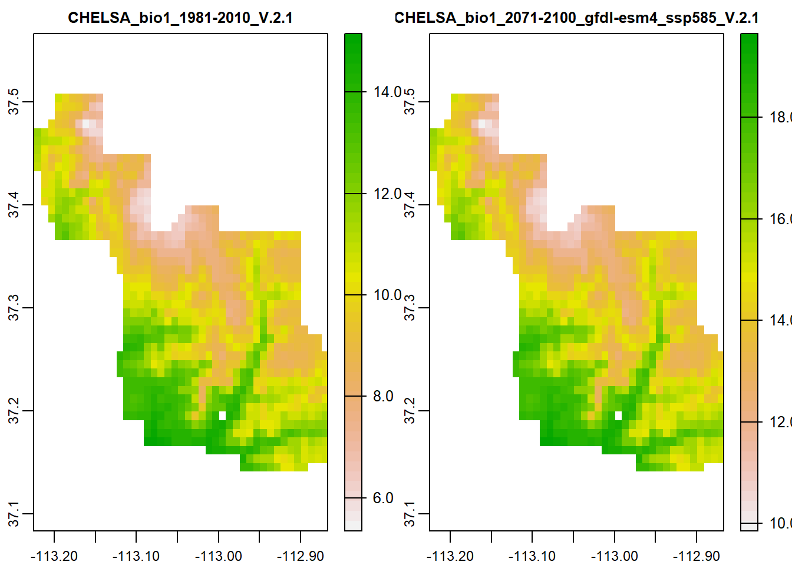
While they look exactly the same, look at the scale bars on the right of each plot. 2100 is showing much higher annual mean temperature.
We can find out the difference between the 2 rasters by simply subtracting the future projection by the current. Values will be negative… so the more negative the number, the greater the change.
x <- (clim$`CHELSA_bio1_1981-2010_V.2.1`-clim$`CHELSA_bio1_2071-2100_gfdl-esm4_ssp585_V.2.1`)
terra::plot(x)
writeRaster()
After you have created a raster stack or new raster, you can save it to a specified folder using writeRaster.
writeRaster(raster, filename = “pathway/name you would like your raster to be.tif”)
Raster Data Sources
The National Map Downloader: https://apps.nationalmap.gov/downloader/#/
Natural Earth Data: http://www.naturalearthdata.com/downloads/
Free GIS Dara Library: https://freegisdata.rtwilson.com/